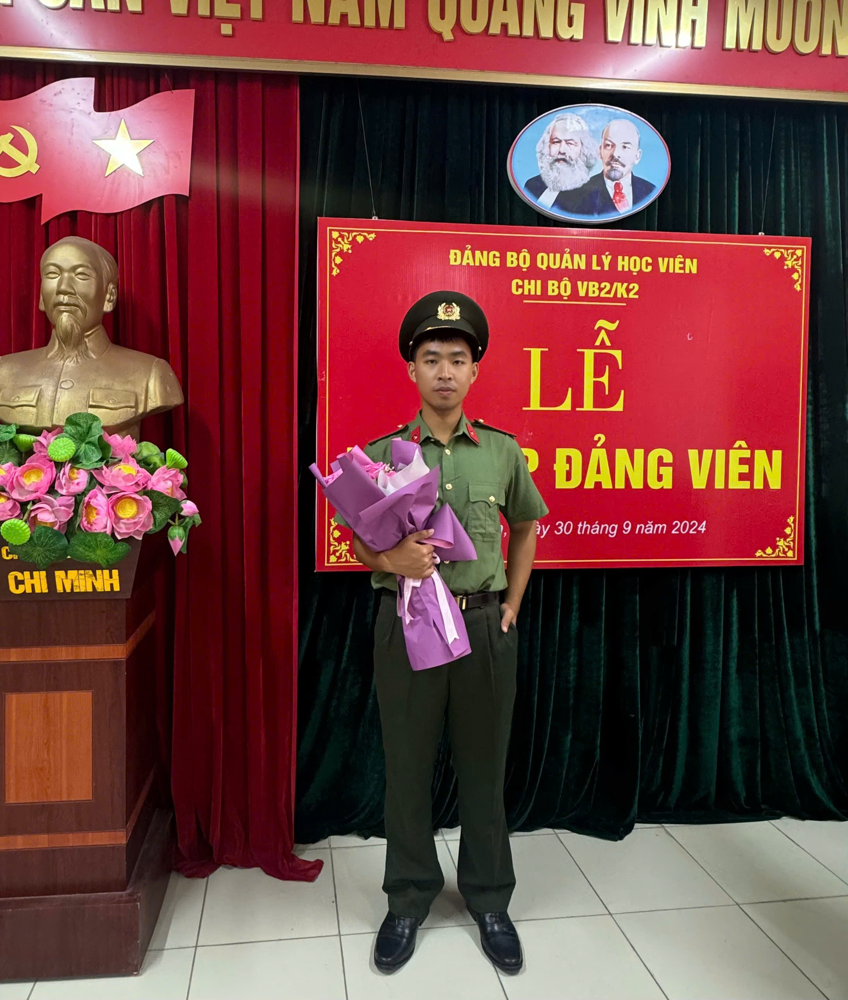
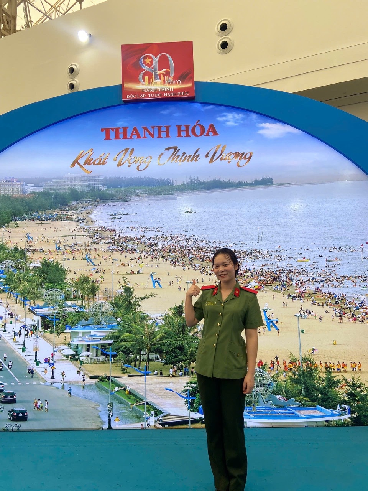
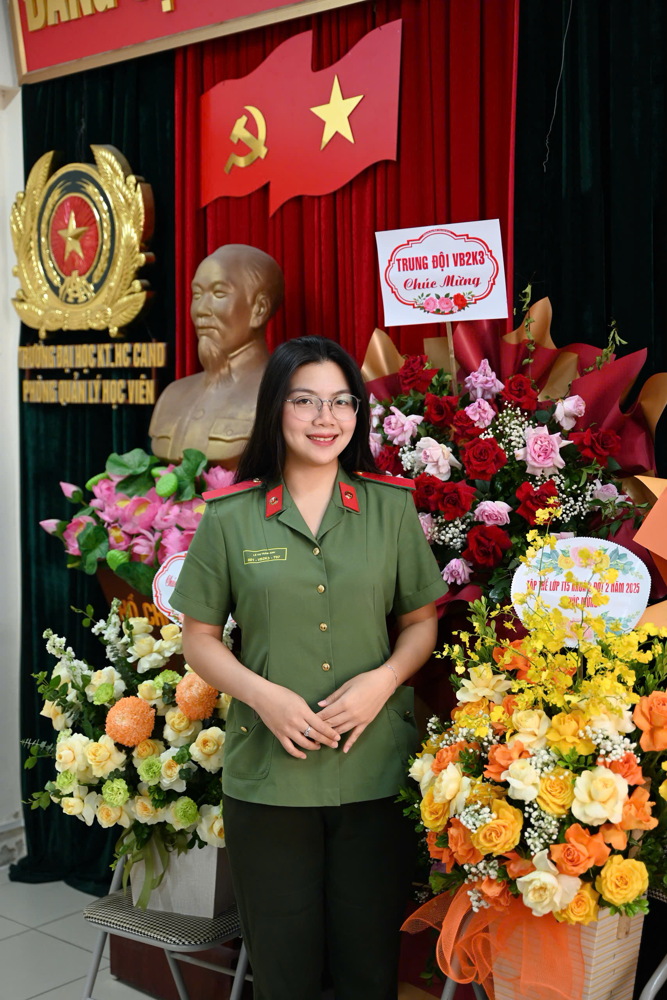
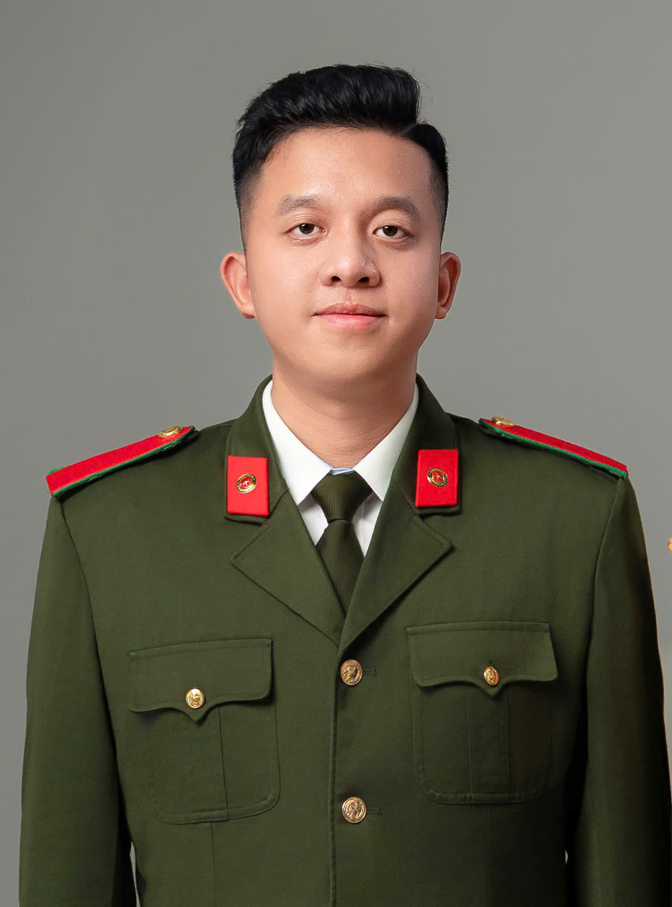
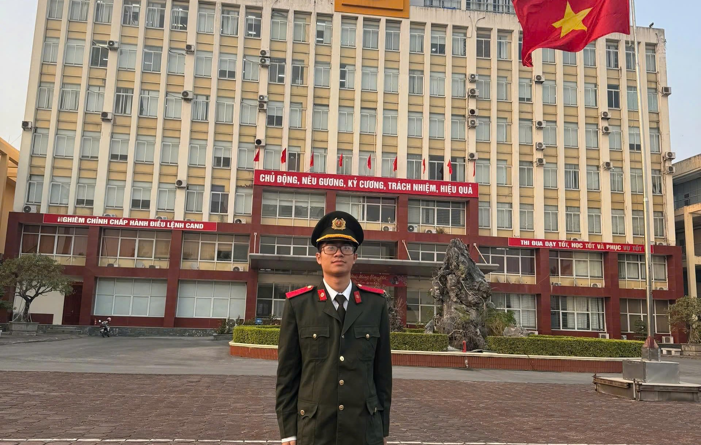

Ý tưởng thiết kế trang web trình chiếu tương tác cho toàn bộ bài dự thi được xây dựng theo định hướng hiện đại, trực quan và mang tính trải nghiệm cao, nhằm chuyển tải nội dung một cách sinh động, dễ tiếp cận nhưng vẫn bảo đảm tính chính trị, học thuật và trang trọng của một công trình nghiên cứu về truyền thống 80 năm của lực lượng An ninh nhân dân. Trang web không chỉ đơn thuần là nơi trình bày nội dung bài viết mà còn là một “không gian số” tái hiện lại hành trình lịch sử, giúp người xem có thể tương tác, khám phá và cảm nhận sâu sắc hơn về những chặng đường phát triển của lực lượng. Về cấu trúc, trang web được thiết kế thành các phân khu rõ ràng. Mỗi phần được trình bày dưới dạng các “slide” hoặc “section” cuộn dọc (scroll storytelling), kết hợp giữa văn bản, hình ảnh tư liệu, sơ đồ và các hiệu ứng chuyển động nhẹ nhàng nhằm tăng tính hấp dẫn. Đặc biệt, các mốc lịch sử quan trọng sẽ được thể hiện dưới dạng timeline tương tác, cho phép người xem nhấp vào từng giai đoạn để tìm hiểu chi tiết về các sự kiện, chiến công tiêu biểu. Bên cạnh đó, trang web tích hợp các yếu tố đa phương tiện như ảnh, video, infographic, giúp nội dung không bị khô cứng mà trở nên trực quan hơn. Một số phần có thể thiết kế dạng câu hỏi – đáp tương tác hoặc trắc nghiệm ngắn để người xem tự kiểm tra kiến thức, qua đó tăng tính tham gia và ghi nhớ nội dung. Về giao diện, trang web sử dụng tông màu chủ đạo trang nghiêm (đỏ, vàng, xanh đậm), kết hợp biểu tượng, hình ảnh đặc trưng của lực lượng Công an nhân dân, bảo đảm tính nhận diện và phù hợp với chủ đề chính trị. Bố cục được tối ưu cho cả máy tính và thiết bị di động, giúp người xem dễ dàng truy cập ở mọi nền tảng. Tổng thể, trang web trình chiếu tương tác không chỉ là công cụ hỗ trợ trình bày bài dự thi mà còn là một sản phẩm ứng dụng công nghệ, thể hiện tư duy đổi mới, sáng tạo của nhóm tác giả, góp phần lan tỏa giá trị lịch sử và ý nghĩa thời đại của truyền thống lực lượng An ninh nhân dân trong môi trường số hiện nay.
Tham gia cuộc thi “Tìm hiểu truyền thống 80 năm xây dựng, chiến đấu và trưởng thành của lực lượng An ninh nhân dân” không chỉ là một hoạt động mang ý nghĩa truyền thống lịch sử, mà còn là dịp đặc biệt để mỗi cán bộ, học viên lực lượng Công an nhân dân nhìn lại chặng đường lịch sử vẻ vang của lực lượng, từ đó củng cố niềm tin, nâng cao nhận thức và xác định rõ hơn trách nhiệm của bản thân trong sự nghiệp bảo vệ an ninh quốc gia trong tình hình mới. Đối với nhóm tác giả – là những học viên đang học tập, rèn luyện tại Học viện Kỹ thuật và Công nghệ an ninh – việc tham gia cuộc thi còn mang ý nghĩa sâu sắc hơn khi gắn liền với quá trình hình thành lý tưởng, bản lĩnh chính trị và định hướng nghề nghiệp trong tương lai. Trước hết, mục đích quan trọng của bài dự thi là góp phần tìm hiểu, hệ thống hóa và làm sáng tỏ những giá trị truyền thống tốt đẹp của lực lượng An ninh nhân dân Việt Nam trong suốt 80 năm qua. Thông qua việc nghiên cứu các giai đoạn lịch sử, các chiến công tiêu biểu và những đóng góp to lớn của lực lượng trong sự nghiệp cách mạng, nhóm tác giả mong muốn tái hiện một cách sinh động, toàn diện bức tranh về quá trình hình thành, phát triển và trưởng thành của lực lượng An ninh nhân dân. Đây không chỉ là sự tri ân đối với các thế hệ đi trước đã cống hiến, hy sinh vì độc lập, tự do của Tổ quốc, mà còn là cơ sở để khẳng định vị trí, vai trò đặc biệt quan trọng của công tác an ninh trong sự nghiệp xây dựng và bảo vệ đất nước. Bên cạnh đó, bài dự thi hướng tới mục tiêu nâng cao nhận thức chính trị, tư tưởng cho bản thân mỗi thành viên trong nhóm cũng như các học viên khác trong lực lượng. Trong bối cảnh hiện nay, khi tình hình an ninh quốc gia ngày càng diễn biến phức tạp với sự xuất hiện của nhiều loại hình tội phạm mới, đặc biệt là trên không gian mạng, việc hiểu rõ truyền thống, bản lĩnh và phương pháp công tác của lực lượng An ninh nhân dân là điều hết sức cần thiết. Qua quá trình nghiên cứu và thực hiện bài viết, nhóm tác giả có điều kiện tiếp cận sâu hơn với những bài học kinh nghiệm quý báu, từ đó nâng cao khả năng tư duy, phân tích và vận dụng vào thực tiễn công tác sau này. Một mục đích quan trọng khác của việc tham gia cuộc thi là góp phần khẳng định vai trò của Nhân dân trong sự nghiệp bảo vệ an ninh Tổ quốc. Thông qua việc nghiên cứu câu hỏi về trách nhiệm, nghĩa vụ và quyền lợi của Nhân dân, nhóm tác giả nhận thức rõ rằng bảo vệ an ninh quốc gia không phải là nhiệm vụ riêng của lực lượng Công an mà là sự nghiệp của toàn dân. Việc đề xuất các giải pháp nhằm phát huy vai trò của Nhân dân trong bối cảnh mới không chỉ có ý nghĩa lý luận mà còn mang giá trị thực tiễn sâu sắc, góp phần xây dựng “thế trận an ninh nhân dân” vững chắc – nền tảng quan trọng bảo đảm ổn định chính trị và phát triển bền vững đất nước. Đồng thời, thông qua bài dự thi, nhóm tác giả mong muốn thể hiện tinh thần trách nhiệm, ý thức học tập và sự chủ động nghiên cứu khoa học của học viên trong các học viện, trường Công an nhân dân. Đây là cơ hội để rèn luyện kỹ năng thu thập, xử lý thông tin, kỹ năng viết và trình bày một vấn đề mang tính khoa học, logic và có chiều sâu. Quá trình thực hiện bài viết cũng giúp các thành viên trong nhóm nâng cao tinh thần làm việc tập thể, khả năng phối hợp và chia sẻ kiến thức, từ đó góp phần hoàn thiện bản thân cả về chuyên môn lẫn kỹ năng mềm. Ngoài ra, bài dự thi còn là dịp để nhóm tác giả liên hệ, soi chiếu với trách nhiệm của bản thân trong tương lai. Là những học viên được đào tạo trong lĩnh vực kỹ thuật và công nghệ an ninh, nhóm nhận thức rõ vai trò tiên phong của mình trong bảo vệ an ninh quốc gia trên không gian mạng – một lĩnh vực mới, phức tạp nhưng hết sức quan trọng. Việc tham gia cuộc thi giúp mỗi cá nhân xác định rõ hơn mục tiêu phấn đấu, không ngừng học tập, rèn luyện để đáp ứng yêu cầu nhiệm vụ trong tình hình mới, xứng đáng với truyền thống vẻ vang của Lực lượng An ninh Nhân dân.
Thông qua bài dự thi này, nhóm tác giả mong muốn gửi gắm một thông điệp xuyên suốt: truyền thống vẻ vang của lực lượng An ninh nhân dân là nền tảng tinh thần vững chắc, đồng thời là động lực để thế hệ hôm nay tiếp tục phấn đấu, đổi mới và sáng tạo trong sự nghiệp bảo vệ an ninh quốc gia. Trong bối cảnh tình hình thế giới và khu vực có nhiều biến động, đặc biệt là sự phát triển mạnh mẽ của khoa học công nghệ và không gian mạng, yêu cầu đặt ra đối với công tác bảo vệ an ninh quốc gia ngày càng cao và phức tạp. Điều đó đòi hỏi mỗi cán bộ, chiến sĩ Công an nhân dân, đặc biệt là thế hệ trẻ, phải không ngừng học tập, rèn luyện, nâng cao trình độ chuyên môn, giữ vững bản lĩnh chính trị và tinh thần trách nhiệm. Đồng thời, bài dự thi cũng nhấn mạnh vai trò to lớn của Nhân dân trong sự nghiệp bảo vệ an ninh Tổ quốc. Khi mỗi người dân đều có ý thức, trách nhiệm và tinh thần cảnh giác, khi “thế trận lòng dân” được củng cố vững chắc, thì đó chính là yếu tố quyết định bảo đảm thắng lợi trong công tác bảo vệ an ninh quốc gia. Với tinh thần đó, nhóm tác giả mong muốn góp phần nhỏ bé vào việc lan tỏa nhận thức, khơi dậy niềm tự hào và ý thức trách nhiệm trong mỗi cán bộ, chiến sĩ cũng như trong toàn xã hội. Đồng thời, đây cũng là lời khẳng định quyết tâm của thế hệ học viên Công an nhân dân hôm nay trong việc tiếp nối truyền thống, sẵn sàng cống hiến vì sự bình yên của Tổ quốc, vì cuộc sống hạnh phúc của Nhân dân.
(Định hướng)




